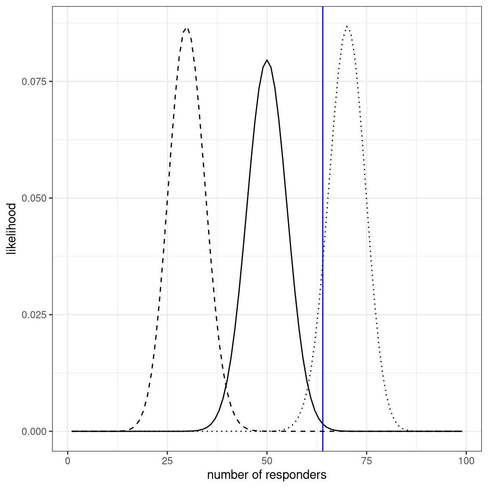
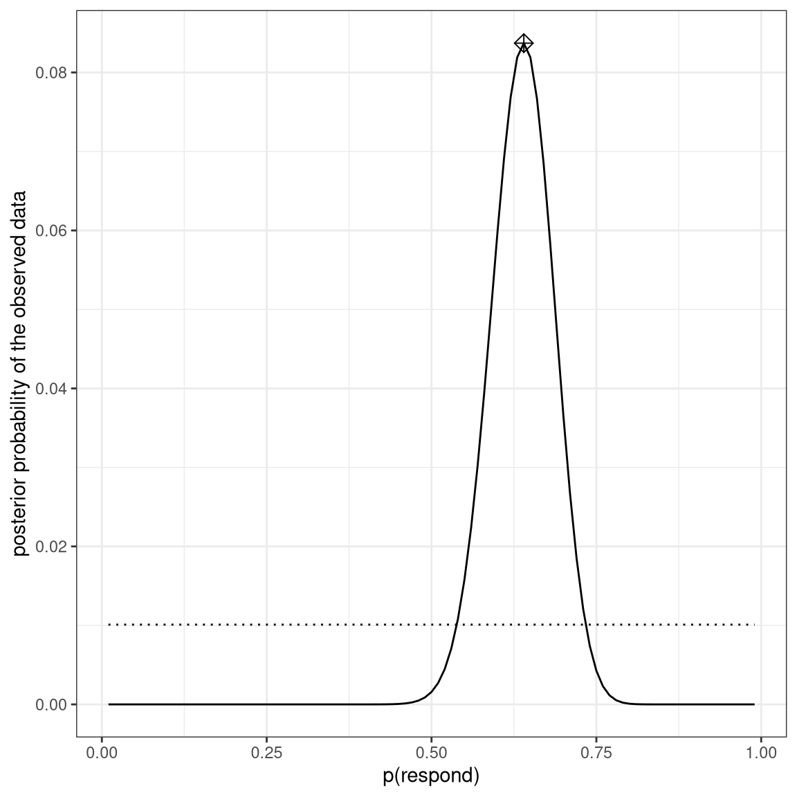

Chapter 10 Bayesian statistics in R
10.1 A simple example (Section 10.1)
bayes_df = data.frame(prior=NA,
likelihood=NA,
marginal_likelihood=NA,
posterior=NA)
bayes_df$prior <- 1/1000000
nTests <- 3
nPositives <- 3
sensitivity <- 0.99
specificity <- 0.99
bayes_df$likelihood <- dbinom(nPositives, nTests, 0.99)
bayes_df$marginal_likelihood <-
dbinom(
x = nPositives,
size = nTests,
prob = sensitivity
) * bayes_df$prior +
dbinom(
x = nPositives,
size = nTests,
prob = 1 - specificity
) *
(1 - bayes_df$prior)
bayes_df$posterior <-
(bayes_df$likelihood * bayes_df$prior) /
bayes_df$marginal_likelihood10.2 Estimating posterior distributions (Section 10.2)
# create a table with results
nResponders <- 64
nTested <- 100
drugDf <- tibble(
outcome = c("improved", "not improved"),
number = c(nResponders, nTested - nResponders)
)Computing likelihood
likeDf <-
tibble(resp = seq(1,99,1)) %>%
mutate(
presp=resp/100,
likelihood5 = dbinom(resp,100,.5),
likelihood7 = dbinom(resp,100,.7),
likelihood3 = dbinom(resp,100,.3)
)
ggplot(likeDf,aes(resp,likelihood5)) +
geom_line() +
xlab('number of responders') + ylab('likelihood') +
geom_vline(xintercept = drugDf$number[1],color='blue') +
geom_line(aes(resp,likelihood7),linetype='dotted') +
geom_line(aes(resp,likelihood3),linetype='dashed')
Computing marginal likelihood
# compute marginal likelihood
likeDf <-
likeDf %>%
mutate(uniform_prior = array(1 / n()))
# multiply each likelihood by prior and add them up
marginal_likelihood <-
sum(
dbinom(
x = nResponders, # the number who responded to the drug
size = 100, # the number tested
likeDf$presp # the likelihood of each response
) * likeDf$uniform_prior
)Comuting posterior
bayesDf <-
tibble(
steps = seq(from = 0.01, to = 0.99, by = 0.01)
) %>%
mutate(
likelihoods = dbinom(
x = nResponders,
size = 100,
prob = steps
),
priors = dunif(steps) / length(steps),
posteriors = (likelihoods * priors) / marginal_likelihood
)
# compute MAP estimate
MAP_estimate <-
bayesDf %>%
arrange(desc(posteriors)) %>%
slice(1) %>%
pull(steps)
ggplot(bayesDf,aes(steps,posteriors)) +
geom_line() +
geom_line(aes(steps,priors),
color='black',
linetype='dotted') +
xlab('p(respond)') +
ylab('posterior probability of the observed data') +
annotate(
"point",
x = MAP_estimate,
y = max(bayesDf$posteriors),
shape=9,
size = 3
)
10.3 Bayes factors (Section 10.3)
Example showing how BFs and p-values relate